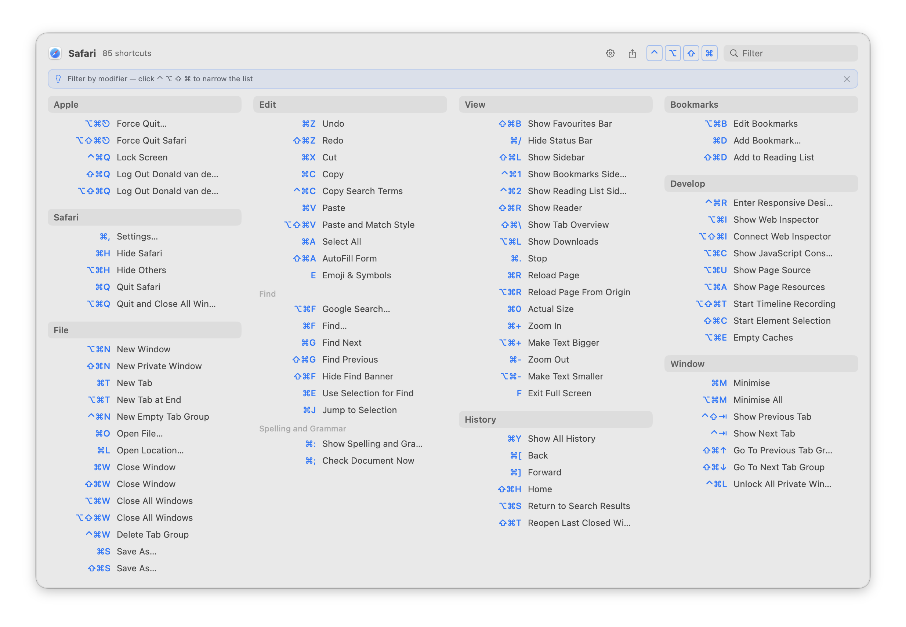

Note on macOS 27.3
The upcoming macOS 27.3 changes how apps get permission to read other apps. KeyMinder's setup assistant doesn't support the new flow yet, so on a new install you may have to grant access yourself in System Settings → Privacy & Security. A fix is being worked on.
The current alpha, 1.0.232, aims to improve setup on macOS 27.3: an illustrated guide shows step by step how to give KeyMinder access to all apps or only to the apps you choose. Download alpha 1.0.232 (ZIP). Alpha builds are for testing and may contain bugs. To keep getting alpha updates automatically, turn on “Receive alpha releases” in KeyMinder’s Settings → Developer; otherwise you’ll only get the next stable release.
If you already have KeyMinder installed and its permission granted, it keeps working after you update to macOS 27.3. macOS will, however, show an indicator in the menu bar while KeyMinder accesses other apps, as it does for every app with similar access. Because KeyMinder reads the frontmost app's menus ahead of time whenever you switch apps, the indicator may be visible often or all the time.
What it does
Instead of hunting through menus to find shortcuts, KeyMinder pops up a clean overview of every keyboard shortcut available in the frontmost app — grouped by menu, triggered by a user-defined hotkey or double-tap on the command, option or control key.
Click any shortcut in the popup to run it immediately. KeyMinder reads menu structures directly via the macOS Accessibility API — the system feature that lets apps read menus and UI elements from other apps — so shortcuts are always accurate and up to date for whatever app you're using.
Search by typing a command name and Tab to it to execute it directly. Toggle or hold modifier keys (⌃ ⌥ ⇧ ⌘) to filter by exact modifier combination. When all shortcuts fit on screen, non-matching rows dim in place so the layout stays stable. There is even an option to show all menu entries — including those without shortcuts — either immediately or only while searching.
Pin your most-used shortcuts as favourites — hover any row for the star button — then filter to them instantly with the ★ button in the header. Use Ignored Commands (Settings → Advanced) to suppress noisy menu items globally or per app. A gear button in the popup header opens Settings without closing your workflow.

Click to enlarge
Requirements
Install
- Download and open
KeyMinder_1.0.228.dmg - Drag
KeyMinder.appto theApplicationsfolder - Open KeyMinder — a welcome wizard guides you through setup
- Follow the wizard to grant Accessibility permission and choose your trigger
Install with Homebrew
brew install --cask dvdweyer/tap/keyminder
Installed from dvdweyer/keyminder? That tap has moved to dvdweyer/tap, so brew update lists KeyMinder as deleted. Run these commands once:
brew tap dvdweyer/tap
brew trust dvdweyer/tap/keyminder
brew reinstall keyminder
KeyMinder keeps updating itself in the meantime.
Why not on the App Store?
KeyMinder uses the Accessibility API to read other apps' menus. This is fundamentally incompatible with the App Store's mandatory App Sandbox — no entitlement exists to re-open this capability inside the sandbox.
The same constraint applies to all similar tools. KeyMinder is distributed as a notarized Developer ID build and is fully open source.
Why I built this
The tools I tried were either too bloated, too expensive, or missing features I cared about. None of them felt quite right. So I built one.
It was also an experiment: could Claude Code produce a production-quality macOS app? The answer is yes — though "yes" still takes real effort and judgment. And building something real is the most honest way to learn.
Pairs well with CustomShortcuts
KeyMinder shows you which keyboard shortcuts exist. For changing or adding your own, I recommend CustomShortcuts by Houdah Software — a free app that lets you remap or create shortcuts for any Mac app's menu items.
Setting your own shortcuts directly in KeyMinder is planned for a future release, but not built yet.
Privacy
KeyMinder runs entirely on your Mac. It does not collect, transmit, or store any data about you or the apps you use. No analytics, no tracking, no account required. The auto-updater checks keyminder.app/appcast.xml for new versions; no personal information is sent in that request.
What's new
1.0.228 Change shortcuts from the popup, update checks and reliability fixes 2026-11-18
- Change a shortcut from the popup: with CustomShortcuts installed, a menu command's shortcut can be changed there straight from KeyMinder's popup
- Check for Updates button in Settings
- The Fn/Globe modifier is shown in menu shortcuts, and the Start Dictation shortcut is listed
- App Shortcut menu paths read "File › Save"
- The System shortcuts section is localized
- Chords and quiz answers match on non-Latin keyboard layouts; the recorded global hotkey label shows the unshifted key
- Long menus keep every row when wrapped in all-entries mode
- A user key equivalent with the keypad flag no longer loses its key
- Disabled shortcuts no longer count in the conflict indicator
- iCloud settings sync (experimental): a pending change is pushed before quitting, settings edited while sync was off are pushed when it is turned on, a remote change refreshes an open Settings window, quota violations and account changes are handled, and update channels and debug logging stay per Mac
- The display-mode setting is part of settings export and import
- Opting into alpha builds also delivers beta builds, and Settings shows that
- "Quiz Again" works for apps without a bundle identifier
- Hotkey recording stops when you leave the onboarding trigger step or the Settings tab
- Every Accessibility call has a timeout, so an unresponsive app can no longer stall the popup; a cancelled menu scan can't interfere with a newer one
- App names are sanitised before they are shown in the popup and the quiz
- Remaining hard-coded strings are localized
- Internal: all strict-concurrency diagnostics cleared ahead of Swift 6
- Translations for all new strings in every supported language